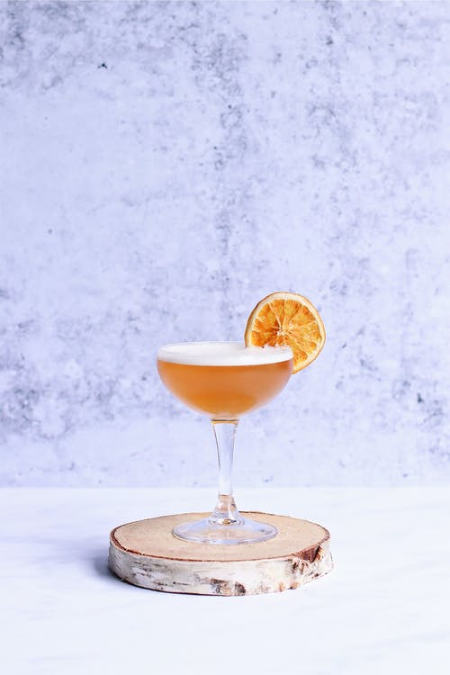

A concoction known for its simplicity and humble nature. A true elixir for distinguished persons.
Ingredients
- 2 oz. Bourbon Whiskey (the higher quality, the better)
- 0.75 oz Lemon Juice
- 0.75 oz. Simple Syrup
- Orange Peel (for Garnish)
- Maraschino Cherry (for Garnish)
- Ice
Barware
- Cocktail Shaker
- Hawthorne Strainer
- Rocks Glass or Goblet-Style Glass
Steps
- Combine liquids (simple syrup, lemon juice, whiskey) into a cocktail shaker.
- Add ice to shaker, cover, and shake furiously.
- Strain shaken cocktail through strainer into glassware filled with ice.
- Garnish with cherry and orange slice.
Return to Main